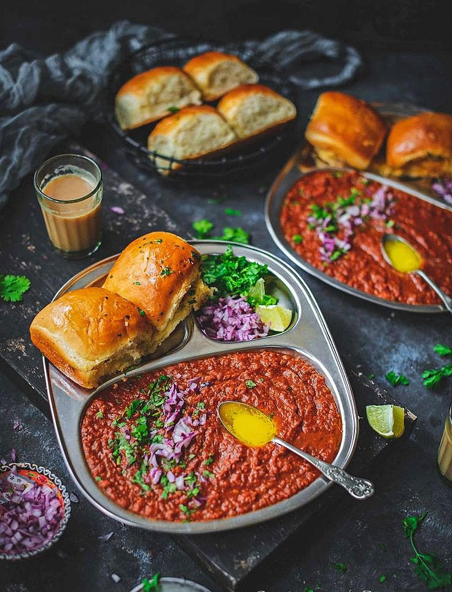

Home
Pav Bhaji Recipe

Description
Pav Bhaji is a popular Indian street food dish made of a spicy mashed vegetable curry (bhaji) served with butter-toasted bread rolls (pav).
Ingredients
For the Bhaji (Vegetable Curry)
- 2 tbsp butter (plus extra for serving)
- 1 tbsp oil
- 1 tsp cumin seeds
- 1 onion (finely chopped)
- 1 green chili (finely chopped)
- 1 tsp ginger-garlic paste
- 2 large tomatoes (pureed)
- 2 medium potatoes (boiled & mashed)
- 1/2 cup cauliflower (boiled & mashed)
- 1/2 cup green peas (boiled)
- 1/2 cup capsicum (finely chopped)
- 1/2 tsp turmeric powder
- 1 tsp red chili powder
- 1 tsp pav bhaji masala
- 1/2 tsp garam masala
- Salt to taste
- 1 tbsp lemon juice
- 2 tbsp fresh coriander (chopped)
For Pav (Bread Rolls)
- 8 pav buns
- 2 tbsp butter
- 1/2 tsp pav bhaji masala
Steps
Prepare the Bhaji
- Heat butter and oil in a pan. Add cumin seeds and let them splutter.
- Add chopped onions and green chili. Sauté until onions turn golden brown.
- Add ginger-garlic paste and sauté for a minute until the raw smell disappears.
- Add tomato puree and cook until oil separates.
- Add chopped capsicum and sauté for 2 minutes.
- Add turmeric, red chili powder, pav bhaji masala, garam masala, and salt. Mix well.
- Add mashed potatoes, cauliflower, and green peas. Mix and mash everything together using a potato masher.
- Add 1/2 cup water and let it simmer for 5-7 minutes until thick and well combined.
- Add lemon juice and mix well. Garnish with fresh coriander and a dollop of butter.
Toast the Pav
- Heat a tawa or pan. Add butter and a pinch of pav bhaji masala.
- Slice the pav buns in half and toast them until golden brown.
Serve
Serve hot bhaji with buttered pav, chopped onions, lemon wedges, and extra butter on top.